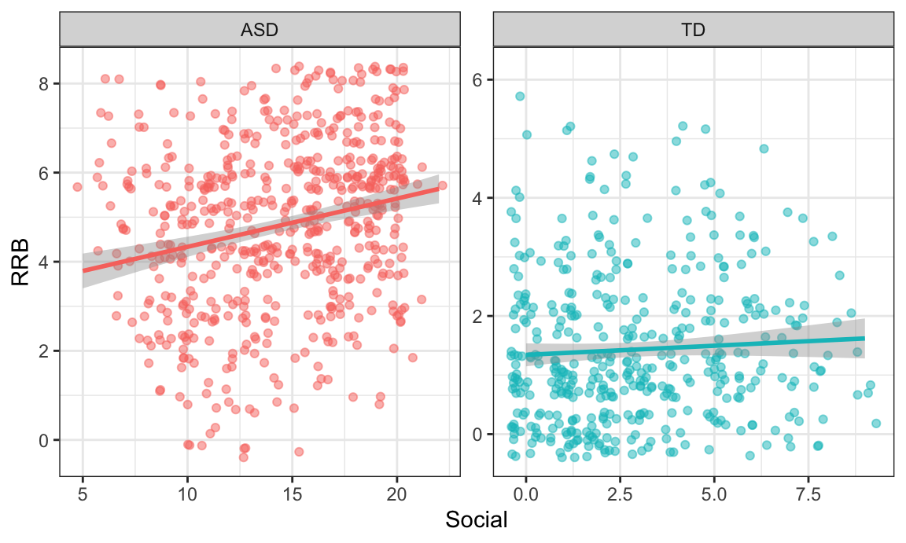

tidyr packagepivot_longer()pivot_wider()separate()unite()Since there will be no live coding session this week, no script is provided. Instead, you will learn about tidying data by reading the textbook.
This week we will go through chapter 12 in the R4DS textbook.
The most important thing to understand this week is pivoting
(pivot_longer() and pivot_wider()). The
concept of pivoting is rather straight forward, but a visualization of
the process can be helpful when first learning about these methods.
Therefore, Hasse created an animation going through the different steps
of pivot_longer() and it can be found here.
Section 12.6 in the textbook contains a case study with data that needs tidying. Follow along and run the code examples in parallel with the explanations in the text. There’s no need complete the exercises related to the case study (#1-4).
Finally, use the tidied data you produced to create a visualization. This time we want you to create an informative plot, showing some relationship between TB cases and one or more of the other variables avaliable in the data. What exactly to plot is up to you, just make sure the graph clearly communicates the relationship(s) you choose to focus on.
Both unite() and separate() have a
remove argument. What does it do? Why would you set it to
FALSE?
Use the cloudbuddy data to produce the plot below, utilizing the
pivot_longer() function to get the data in the right format
before plotting. One helpful trick when wanting to use specific colors
with unknown names (the colors in the Marcus Center logo for example) is
to use the MacOS Digital Color Meter, convert RGB values to hex
code using an online tool like this
one, and use the hex code in R the same way as color names.
Recreate the table below, using a combination of
group_by(), summarise(), unite(),
pivot_wider(), and functions from the
kableExtra package (and perhaps a few other functions as
well). There are different ways the column name for the first column can
be removed, the simplest way being to treat the first column as row
names, something that is described here.
|
raID-01 |
raID-02 |
raID-03 |
raID-04 |
raID-05 |
raID-06 |
raID-07 |
|
|---|---|---|---|---|---|---|---|
|
1-lightgray |
1.57 ± 0.35 |
1.6 ± 0.37 |
1.97 ± 0.32 |
1.67 ± 0.37 |
1.69 ± 0.35 |
2.07 ± 0.36 |
1.81 ± 0.64 |
|
2-darkgray |
7.97 ± 0.24 |
8.02 ± 0.31 |
8.2 ± 0.19 |
8.16 ± 0.31 |
7.94 ± 0.3 |
8.29 ± 0.23 |
7.74 ± 0.38 |
|
3-darkorange |
5.72 ± 0.37 |
5.56 ± 0.28 |
5.86 ± 0.29 |
5.73 ± 0.39 |
6.22 ± 0.34 |
6.08 ± 0.26 |
5.92 ± 0.62 |
|
4-orange |
3.45 ± 0.2 |
3.55 ± 0.18 |
3.87 ± 0.18 |
4 ± 0.18 |
3.77 ± 0.22 |
3.82 ± 0.18 |
3.09 ± 0.32 |
|
5-orangered |
3.04 ± 0.17 |
3.14 ± 0.16 |
3.39 ± 0.15 |
3.23 ± 0.14 |
3.06 ± 0.16 |
3.58 ± 0.15 |
2.67 ± 0.37 |
|
6-red |
0.37 ± 0.11 |
0.51 ± 0.14 |
0.65 ± 0.13 |
0.56 ± 0.12 |
0.58 ± 0.13 |
0.64 ± 0.15 |
0.46 ± 0.2 |
For the next set of exercises, you will get to work with real data from Marcus (sent via Slack). These exercises will be using three different datasets from clinical researchers interested in the Autism Diagnostic Observation Scale (ADOS). Some datasets contain more variables than others and all have different data structures. Your job is to help all three researchers to manipulate (tidy) their data so that visualizing and summarizing the data becomes a straight forward experience.
First up is the ADOS1.xlsx dataset. The researcher
responsible for this data collection created a new row each time a
participant visited the clinic. The participants’ DEX-ID, age at
evaluation, and diagnostic outcome are included in every row, alongside
the ADOS module they received, the date they received it, their scores
on both the Social Affect and Repetitive and Restrictive Behavior
subscales, and the algorithm used to score their ADOS.
Use one of the pivot_*() functions to properly format
the ADOS1 dataset so you are able to recreate the plot
below. Take a look at the legend and y-axis labels for a hint as to the
variables you may need to create.
Next, we have the ADOS2.xlsx dataset, created by a
researcher who might benefit from reading Chapter 12 in the R4DS
text book. This researcher was only interested in participants’ scores
on the Social Affect subscale, but still wanted to measure change over
time. One new column was added for each participant assessed, reflecting
all ages at which participants came to the clinic, inputting their
Social Affect score on the row corresponding with their age at that
clinic visit (we know, not a great way to input data!). As you will see,
this dataset contains many missing values, as it would be quite
unrealistic for all participants to visit at all ages.
Use one of the pivot_*() functions to properly format
the ADOS2 dataset so you are able to calculate the average
number of visits across all participants.
Finally, we have the ADOS3.xlsx, created by a
researcher who only recorded data from a single visit for each
participant. This single visit, however, is reflected across two
different rows, as a new row was created when scoring each subscale.
Use one of the pivot_*() functions to properly format
the ADOS3 dataset so you are able to recreate the plot
below. Take a look at the x- and y-axis labels for a hint as to the
variables you may need to create.

Using the ADOS1 dataset, create a new variable
called Year so that you are able to recreate the plot
below. You may need to use the mutate() function to specify
whether Year variable should be a numeric or character
variable (this will change the default plotting behavior in
ggplot()) and information about how to change the variable
type can be found here.
Hint - the values you will need to create the Year variable
are stored in the Date.Of.Evaluation column.
Using the ADOS1 data, pivot and create a new column
called LanguageAndOutcome so that you can recreate the plot
below. Notice that you may need to filter() this new
variable to only retrieve the groups of interest. The bars in this plot
represent the mean Scores on each Subscale.